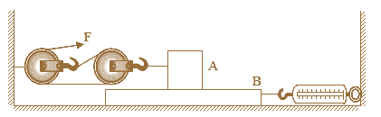

如图所示，拉力
F
为
5N
，物体
A
以
0.1m/s
的速度在物体
B
表面向左做匀速直线运动(
B
表面足够长)；物体
B
静止在地面上，受到地面水平向左
4N
的摩擦力，弹簧测力计示数为
12N
．下列说法正确的是（ ）
A.物体
A
受到的摩擦力为
10N
B.拉力
F
的功率为
1.5W
C.滑轮组的机械效率为
80%
D.拉力
F
增大到
15N
，物体
B
开始向左运动

🖊
2020勤州九上期中
显示答案解析